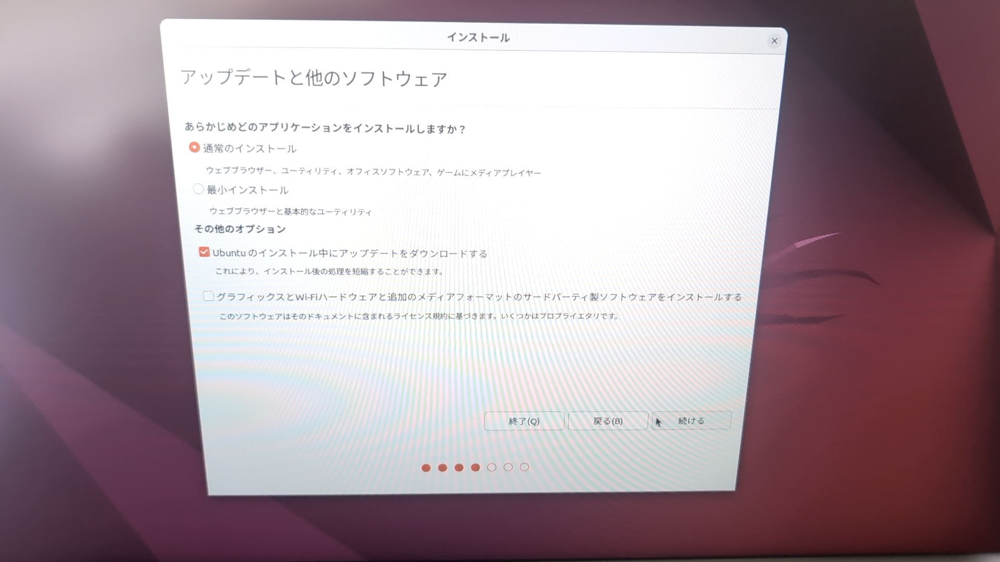

Webサーバーを構築する手順書
まっさらなPCにLinux OSを用いてサーバーのーのセットアップをし、Webサーバーを構築する。
環境
ハードウェア
- CPU: Intel Pentium G3258, 2コア/2スレッド (ハイパースレッディング非対応), 3.20GHz
- メモリ: 4GB DDR3
- ストレージ: 500GB HDD (Western Digital Blue, 型番: WD5000AAKX, 回転数: 7200 RPM)
- ネットワークカード: Intel Ethernet Connection I217-V (有線)
- グラフィックカード: オンボード (Intel HD Graphics 4600)
BIOS/UEFI
- ベンダー: American Megatrends Inc.
- バージョン: P2.50 (2015年12月11)
- 起動モード: UEFI
- セキュアブート: 無効
ネットワーク
- 接続方法: 有線LAN
- IPアドレス: 固定 (10.133.1.35)
- DNS: 8.8.8.8
ソフトウェア
- ディストリビューション: Ubuntu 22.04 LTS (Jammy Jellyfish)
- インストールメディア: USBメモリ (16GB, Rufusで作成)
Linuxのインストール
Linuxとは
Linux とは、自由に再配布することができる独立した Unix 系の OS のひとつで、 狭義にはユーザーの指示に従ってプログラムを実行したり、さまざまなデータを管理をしたり、 他のコンピュータと通信したりするものを指す。 1991年当時大学院生だったリーナス・トーバルズ氏によって開発が進められて無償で公開された後、 全世界のボランティアの開発者によって改良が進められて現在にいたった。
- Ubuntu と Rufus を WindowsPC にインストール。
-
Rufus を起動してデバイスを USB、ブートの種類をインストールした Ubuntu のファイル、
パーティション構成を GPT、ターゲットシステムを UEFI (CSM 無効) に設定する。
- Ubuntu を入れる PC に USB を差し込み、起動時にF2を連打して BIOS を開く。
-
BIOS の Boot タブから起動の順番を変更し、USB が最初に起動されるようにする。

-
BIOS を閉じ、USB が正常に起動されると以下のような画面が出るので、
Try or Install Ubuntu を選択する。
-
Ubuntu のインストーラーを正常に起動出来たら、右の Ubuntuをインスト―ル を選択する。
-
次にキーボードレイアウトを選択する。(ここでは日本語)
-
次にネットワークの設定をするが、有線ならばこれは必要ない。
無線の場合は各自自分の Wi-Fi にあった認証を行う。

-
次にアップデートと他のソフトウェアを選択する。
(本サイトでは通常のインストールを選択、Ubuntu のインストール中にアップデートをダウンロードする にチェック)
 -
次にインストールの種類を選択する。
(本サイトではディスクを削除して Ubuntu をインストールを選択)

-
次に住んでいる場所を選択する。
(本サイトでは Tokyo を選択)
これは時刻に影響する。
-
最後に個人情報やユーザー名を入力して続けるを選択する。
コンピューターの名前とユーザー名はコマンドの実行時に重要となる。
- インストールが完了するまで待った後、今すぐ再起動をクリックし、 Please remove the installation medium, then press ENTER: と表示されたらUSBを抜く。
-
起動するまで待ち、少し設定するかスキップするかした後次のような画面が出てくれば成功。
Apacheを用いたWebサーバーの構築
Apache HTTP Server のインストール
本サイトでは、Apache HTTP Server をインストールしサーバー構築を試みる。
Apache HTTP Server とは
Apache HTTP Server は、 Apache Software Foundation が開発している オープンソースソフトウェアのうちの 1 つである。 Linux 環境における Web サーバーとして高いシェアを持っている。 本サイトでは、以降 Apache HTTP Server は Apache と呼称する。
Apache のインストールは以下のコマンドを実行する。
sudo apt update # インストール前にパッケージの更新
sudo apt -y install apache2 # Apache HTTP Server のインストール
インストールが完了した後は、Apache の起動をしサーバーのステータスを確認する。
sudo systemctl start apache2 # Apache の起動
sudo systemctl enable apache2 # Apache の自動起動の有効化
sudo systemctl status apache2 # Apache のステータス
active (running)と表示されれば成功である。
● apache2.service - The Apache HTTP Server
Loaded: loaded (/lib/systemd/system/apache2.service; enabled; vendor
preset: enabled)
Active: active (running) since Wed 2024-07-10 06:25:37 JST; 9h ago
Docs: https://httpd.apache.org/docs/2.4/
Main PID: 202028 (apache2)
Tasks: 55 (limit: 9098)
Memory: 20.8M
CGroup: /system.slice/apache2.service
├─202028 /usr/sbin/apache2 -k start
├─202030 /usr/sbin/apache2 -k start
└─202031 /usr/sbin/apache2 -k start
Jul 10 06:25:37 ホスト名 systemd[1]: Starting The Apache HTTP Server...
Jul 10 06:25:37 ホスト名 systemd[1]: Started The Apache HTTP Server.
最後にブラウザから http://localhost にアクセスし、Apache のウェルカムページが表示されれば完了となる。
Apache の設定
Apache の設定ファイルは /etc/apache2/apache2.conf や /etc/apache2/sites-available/000-default.conf で管理される。前者の設定ファイルは サーバ全体に適用するためのグローバル設定ファイル、後者の設定ファイルはデフォルト でアクセスされる仮想ホストに適用するための設定ファイルである。 Web ページに関する設定をする場合は基本的に /etc/apache2/sites-available/000-default.conf を変更するか、 新たに仮想ホストの設定ファイルを作成する。本サイトでは仮想ホストの設定ファイルを作成する方法を用いる。 デフォルトの仮想ホストの設定ファイルを残したまま異なる仮想ホストを作りたい場合は、 /etc/apache2/sites-available/ 直下に新たな設定ファイルを作成する。 ファイル名を決めて、拡張子を .conf として作成する。(今回はexample.conf) DocumentRoot に指定したディレクトリが存在しない場合や、DirectoryIndex に指定し たファイルが存在しない場合は作成する。
sudo touch /etc/apache2/sites-available/example.conf
作成した設定ファイルに以下の内容を記述する。 ディレクトリパス(今回は/var/www/html)には自身がコンテンツをデプロイするディレクトリを指定し、 ファイル名(今回はindex.html)にはトップページとして表示したいファイルを指定している。
<VirtualHost *:80>
ServerAdmin webmaster@localhost
DocumentRoot /var/www/html
DirectoryIndex index.html
ErrorLog ${APACHE_LOG_DIR}/error.log
CustomLog ${APACHE_LOG_DIR}/access.log combined
</VirtualHost>
DocumentRoot に指定したディレクトリが存在しない場合や、 DirectoryIndex に指定したファイルが存在しない場合は作成する。
sudo mkdir -p /var/www/html
sudo touch /var/www/html/index.html
sudo vi /var/www/html/index.html
<--/var/www/html/index.htmlに記述するサンプル-->
<html>
<body>
<h1>Welcome to my page</h1>
</body>
</html>
作成した仮想ホストを Web サーバに反映させるために、仮想ホストを有効化をする。 a2ensite コマンドは、設定ファイルのシンボリックリンクを /etc/apache2/sites-enable/ に作成するコマンドである。 これによって、新しく作成した仮想ホストを Web サーバにエントリーしたことになり、 Apache の再起動を行うとエントリした仮想ホストを反映させることができる。
sudo a2ensite example.conf # 仮想ホストの有効化
sudo systemctl reload apache2 # 有効化した仮想ホストをサーバに反映
エントリーしている仮想ホストを除外したい場合は、a2dissite コマンドを利用する。 今回は、作成した仮想ホストと干渉することを防ぐためにデフォルトの仮想ホストを無効化する。
sudo a2dissite 000-default.conf # 仮想ホストの無効化
sudo systemctl reload apache2 # 有効化した仮想ホストをサーバに反映
ファイアウォールの設定
構築した Web サーバーへのアクセスを許可するには、ファイアウォールの設定を変更する必要がある。 Ubuntu では、ファイアウォールの設定に ufw コマンドを利用する。
sudo ufw enable # ファイアウォールの有効化
sudo ufw allow "Apache Full" # 80 番ポートと 443 番ポートの同時開放
sudo ufw status
正常に実行できていれば、ステータスを確認した際に下記のような実行結果が得られる。
Status: active
To Action From
-- ------ ----
Apache Full ALLOW Anywhere
Apache Full (v6) ALLOW Anywhere (v6)
http://localhost にアクセスすることで、構築した Web サーバーにアクセスできる。 この後は特定のユーザのみが閲覧できる Web ページを作成しなければならない場合に備え、 ユーザ名とパスワードによる認証を用いたものを作る。 今回は、もっとも簡単な認証方法が基本認証(BASIC 認証)を用いる。
基本認証とは
基本認証は、あらかじめ Apache にユーザ名とパスワードを登録しておき、 特定のディレクトリ配下にアクセスする場合に認証を求める仕組みである。
補足
最新バージョンでは、apache2 のインストールに含まれており、 apache2-utils を別途インストールする必要がない。 しかし、バージョンや環境によっては含まれていない可能性もあるため、 念のため実行しておくとよい。
sudo apt install apache2-utils
apache2-utils には htpasswd コマンドが含まれており、 このコマンドを使ってユーザ登録を行う。 インストールしてからこれまでにユーザ登録を行ったことがない場合は、 -c オプションを追加する。
sudo htpasswd -c /etc/apache2/.htpasswd ユーザ名 # -cは初回のみ
次に、認証を利用する仮想ホストの設定ファイルにディレクティブを追加する。 今回は<VirtualHost *:80>内部の一番下に入れるとよい。
設定の解説
認証を追加したいディレクトリに対して、Directory でディレクトリパスを指定する。 ここでの注意点は、指定したディレクトリ以下にあるものに対してアクセスするときに認証が必要になるということである。 AuthType は認証方法の種類を表しており、ここでは Basic(基本認証)を指定する。ま た、AuthName は認証時に表示されるポップアップのタイトル名を表す。AuthUserFile は、 ユーザを登録したファイルのパスを記述する。Require はアクセス可能なユーザを定義する ためのディレクティブであり、今回は登録されているユーザすべてのアクセスを受け入れる valid-user としている。
<Directory "/var/www/html">
AuthType Basic
AuthName "Restricted Content"
AuthUserFile /etc/apache2/.htpasswd
Require valid-user
</Directory>
変更が完了した後は、Apache を再起動する。
sudo systemctl reload apache2
http://localhost にアクセスし、きちんと設定できたが確認する。
Dockerを用いたWebサーバーの構築
Docker とは
Docker は仮想化技術の一つであるコンテナ型仮想化を提供するソフトウェアであり、 物理マシン上で動作し、コンテナと呼ばれる実行環境を管理する。 従来のホスト型仮想化と異なって構築されるコンテナにはゲスト OS を必要としないという特徴があり、 リソース効率が良く計算処理のオーバーヘッドが少ない。 また、イメージと呼ばれる環境を再現するためのアーカイブファイルがあり、 イメージを利用することで自身の環境を汚すことなく手軽に環境構築することができる。 ホスト OS は Linux であることが要求される。
Docker のインストール
Ubuntu で Docker をインストールする場合は以下の手順でコマンドを実行する。
# Add Docker's official GPG key:
sudo apt-get update
sudo apt-get install ca-certificates curl
sudo install -m 0755 -d /etc/apt/keyrings
sudo curl -fsSL https://download.docker.com/linux/ubuntu/gpg -o /etc/apt/keyrings/docker.asc
sudo chmod a+r /etc/apt/keyrings/docker.asc
# Add the repository to Apt sources:
echo \
"deb [arch=$(dpkg --print-architecture) signed-by=/etc/apt/keyrings/docker.asc] https://download.docker.com/linux/ubuntu \
$(. /etc/os-release && echo "$VERSION_CODENAME") stable" | \
sudo tee /etc/apt/sources.list.d/docker.list > /dev/null
sudo apt-get update
sudo apt-get install docker-ce docker-ce-cli containerd.io docker-buildx-plugin docker-compose-plugin
インストールできたかどうか確認するために、バージョンと起動状態の確認を行う。 状態を確認した際に、active や enabled になっていなければ、自身で起動などを行う。
sudo docker --version
sudo systemctl status docker
今後、docker コマンドをユーザで実行したい場合は、docker グループにユーザを追加しておくとよい。
sudo usermod -aG docker $USER
newgrp docker
Web サーバの構築の実践
Docker はコンテナを作成し手軽に Web サーバの構築ができる。 httpdとして公開されているイメージを用いてコンテナを起動することで、 Web サーバを起動することができるのである。 まずWeb サーバのコンテンツの管理などのためのディレクトリを作成し、 その直下に html や設定ファイルを管理するためのディレクトリを作成する。 (今回はディレクトリ名を mywebsite とする)
mkdir -p ~/mywebsite/htdocs ~/mywebsite/conf
次に、httpd イメージを使いコンテナを起動させる。
cd ~/mywebsite
docker run -dit --name my-apache-app -p 8080:80 -v ./htdocs:/usr/local/apache2/htdocs/ -v ./conf:/usr/apache2/conf httpd:2.4
解説
-p 8080:80 はホストマシンの 8080 番ポートとコンテナの 80 番ポートをバインドさせており、
これによって外部から通信を受け取れるようになる。
-v ./htdocs:/usr/local/apache2/htdocs/ や -v ./conf:/usr/apache2/conf は、
ホストマシンとコンテナ間のファイルをマウントしている。
これにより、ホストマシン側の ~/mywebsite/htdocs や ~/mywebsite/conf
に配置されたファイルがコンテナに反映されるようになる。
例えば、 ~/mywebsite/htdocs の直下に Hello, World と記述された index.html を配置すると、
その内容がアクセス時に表示される。
後は http://localhost:8080 にアクセスすることでサーバーが構築できたか確認できる。